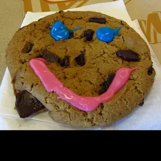
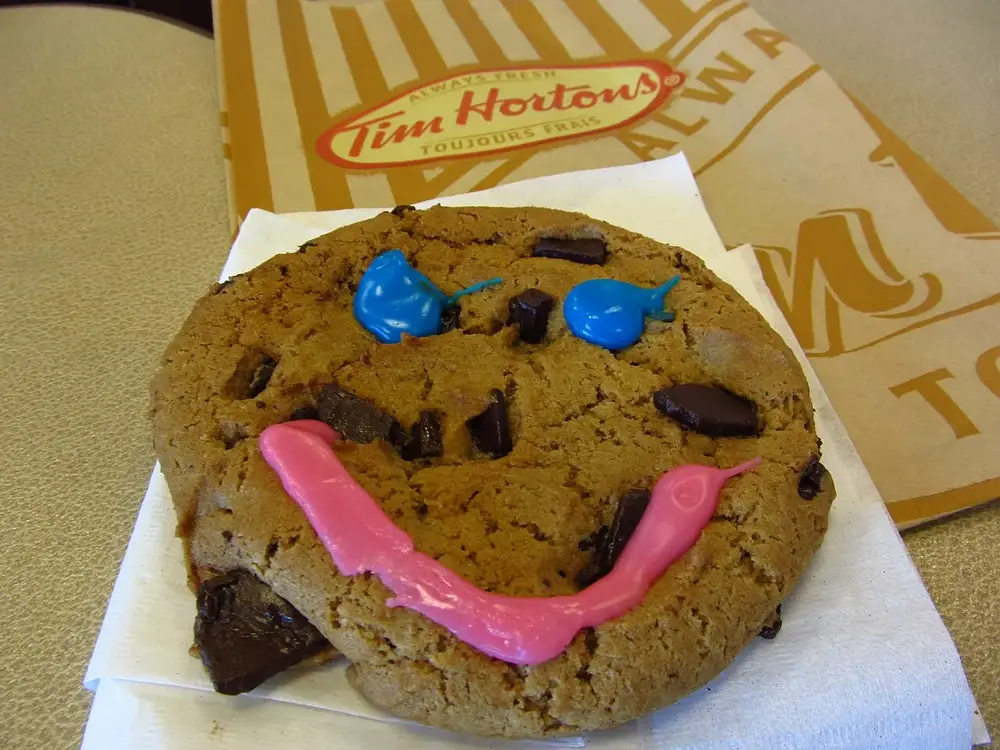

Unofficial fan guide - not affiliated with Tim Hortons
Full Menu / Cookies / Smile Cookie

$2.00 CAD
Prices last verified: September 26, 2026
This is an independent, unofficial guide to the Tim Hortons Canada menu. It is not affiliated with, endorsed by, or sponsored by Tim Hortons or Restaurant Brands International. Prices are listed reference estimates in CAD, before tax, and vary by location, province and over time. They are sourced from a public menu reference and may not reflect current pricing at every location. Product names and images belong to their respective owners. See Sources for details.
The Tim Hortons Smile Cookie is a Chocolate Chunk Cookie hand-decorated with a pink icing smile and blue eyes. It sells for $2 plus tax during a one-week campaign, and 100% of the pre-tax price goes to a local charity. The 2026 campaign ran April 27 to May 3 and raised a record $23.3 million.
A Smile Cookie costs $2 plus tax in Canada, and the full $2 is donated. The same $2 price applied to the spring 2026 campaign and to the 2025 Holiday Smile Cookie, so a dozen works out to $24 before tax.
The Smile Cookie is priced above the everyday Chocolate Chunk Cookie, which lists at about $1.69 and uses the same base. The difference in how the money is used matters more than the extra 31 cents: a regular cookie is normal restaurant revenue, while every pre-tax dollar of a Smile Cookie goes to charity.
| Cookie | Price (before tax) | Where the pre-tax money goes | When you can buy it |
|---|---|---|---|
| Smile Cookie | $2 | 100% to a local charity | One week each spring |
| Holiday Smile Cookie | $2 (2025) | 100% to local charities and Tim Hortons Foundation Camps | One week in November |
| Chocolate Chunk Cookie | about $1.69 | Regular sale | Year-round |
Smile Cookie Week 2026 ran from Monday, April 27 to Sunday, May 3, 2026, so the spring campaign is over for this year. Tim Hortons now runs two Smile Cookie campaigns a year: the original in spring, and a Holiday Smile Cookie in November that began in 2023.
| Campaign | Dates | Status (September 27, 2026) |
|---|---|---|
| Holiday Smile Cookie 2025 | November 17 – 23, 2025 | Finished |
| Smile Cookie 2026 (30th anniversary) | April 27 – May 3, 2026 | Finished — raised $23.3 million |
| Holiday Smile Cookie 2026 | Not announced yet | Last year's campaign ran the third week of November |
If the 2026 holiday campaign follows 2025, expect it in mid-to-late November. We will update this page when Tim Hortons confirms the dates.
The spring Smile Cookie starts as the regular Chocolate Chunk Cookie. During campaign week, restaurant crews and volunteers from the charities pipe a pink icing smile and two blue icing eyes onto each one by hand, which is why no two faces look exactly alike.
The Holiday Smile Cookie uses a different recipe. It is a white-chocolate sugar cookie with red and green sprinkles, and it still gets a hand-piped smile.

Tim Hortons does not print Smile Cookie nutrition, because its Canadian nutrition guide leaves out limited-time items. The base cookie is listed, though. In the August 2025 guide, one Chocolate Chunk Cookie has 310 calories, 17 g of fat and 22 g of sugar. The icing face adds a little on top, which fits the 300 to 330 calories third-party trackers show for the finished Smile Cookie.
| Per cookie | Chocolate Chunk Cookie (official, Aug 2025) | Smile Cookie (third-party listings) |
|---|---|---|
| Calories | 310 | 300 – 330 |
| Fat | 17 g (10 g saturated) | 12 – 17 g |
| Carbohydrates | 38 g | 42 – 47 g |
| Sugars | 22 g | 26 – 27 g |
| Protein | 3 g | 3 – 4 g |
| Sodium | 260 mg | 250 – 370 mg |
Third-party listings flag wheat (gluten), milk and egg, and cookies are made in shared kitchens. If you have a food allergy, check the ingredient information in the Tim Hortons app or ask the restaurant before ordering.
Every pre-tax dollar goes to a charity or community group picked by the owner of the restaurant that sold the cookie. That is why the cause changes from town to town. In Prince Albert, Saskatchewan, for example, 2026 sales supported Big Brothers Big Sisters of Prince Albert. Hospital foundations, school breakfast programs and youth groups are common picks. The Tim Hortons Smile Cookie page has a map of each restaurant's chosen charity.
The totals keep climbing. The 2025 campaign raised $22.6 million, and the 2026 campaign set a record of $23.3 million for nearly 700 charities and community groups in Canada and the U.S. Tim Hortons says the program has raised more than $174 million since 1996. The holiday campaign also funds Tim Hortons Foundation Camps, and Tim Hortons reported that it raised $10.7 million in 2024 and $20.5 million in its first two years.
The Smile Cookie began in Hamilton, Ontario, where Tim Hortons opened its first shop in 1964. In 1996, restaurant owner Maureen Sauve and other local Tim Hortons owners sold smiley-face cookies to raise money for the children's hospital ward treating Sauve's daughter. Thirty years later it is a national campaign. For the 2026 anniversary, Tim Hortons also sold a four-in-one Smile Cookie plush toy, with net proceeds going to local charities.
During campaign week you can buy Smile Cookies in three ways, and the donation works the same for each:
Outside campaign week, the nearest option is the plain Chocolate Chunk Cookie. Its 6-pack and 12-pack assortments are on the Tim Hortons cookies menu.
A Smile Cookie costs $2 plus tax in Canada. That price applied to the spring 2026 campaign and the 2025 Holiday Smile Cookie campaign, and 100% of the pre-tax $2 goes to charity.
Smile Cookie Week 2026 ran from April 27 to May 3, 2026, and it is over. The next chance to buy one is the Holiday Smile Cookie campaign, which ran November 17 to 23 in 2025; Tim Hortons had not announced 2026 holiday dates as of September 27, 2026.
No, the Smile Cookie is sold only during its campaign weeks. The closest year-round option is the plain Chocolate Chunk Cookie, which is the same base cookie without the icing face, at about $1.69.
The spring Smile Cookie is a Chocolate Chunk Cookie decorated by hand with a pink icing smile and blue icing eyes. The Holiday Smile Cookie is different: a white-chocolate sugar cookie with red and green sprinkles and a hand-piped smile.
Tim Hortons does not list the Smile Cookie in its Canadian nutrition guide, because it is a limited-time item. Its base, the Chocolate Chunk Cookie, has 310 calories in the August 2025 guide; third-party trackers list the finished Smile Cookie at 300 to 330 calories.
Yes, 100% of the pre-tax price goes to charity. The sales tax does not, and the charity is chosen by the owner of the restaurant where you buy the cookie.
The 2026 campaign raised a record $23.3 million for nearly 700 charities and community groups in Canada and the U.S. That beat the $22.6 million raised in 2025.
The Smile Cookie was started in 1996 by Maureen Sauve and other Tim Hortons restaurant owners in Hamilton, Ontario. The first campaign raised money for the Hamilton children's hospital where Sauve's daughter was being treated.
Yes, participating restaurants take pre-orders and bulk orders during the campaign. Some local charities also run dozen-cookie pre-orders and delivery on behalf of their restaurant.
Yes, during the campaign week the Smile Cookie can be ordered through the Tim Hortons app for pickup or delivery. The donation rules are the same: the pre-tax price goes to the restaurant's chosen charity.
For the 30th anniversary in 2026, Tim Hortons sold a four-in-one Smile Cookie plush toy alongside the cookie. Its net proceeds also went to local charities.
Campaign dates, prices and totals on this page come from Tim Hortons' own campaign announcements (April 27 and May 7, 2026, and the 2025 Holiday Smile Cookie release), local charity and news coverage of the 2025 and 2026 campaigns, and the Tim Hortons Canadian Nutrition Guide (August 2025). See Sources for how we check menu data.